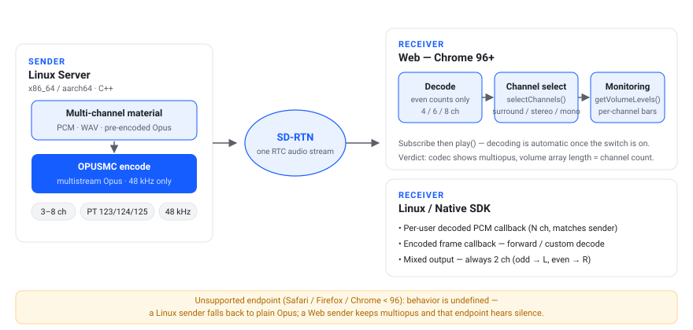

Agora 音频多声道（multiopus）
功能总述 · 集成指南 · 端到端验证（Linux SDK + Web SDK + Native SDK）
什么是音频多声道
音频多声道功能基于 Opus 多流编码（OPUSMC），在一路 RTC 音频流中传输 3~8 个声道的音频：发送端（如 Linux SDK）将多声道素材编码为 OPUSMC 流， 经 SD-RTN 分发后，接收端（Web / Native / Linux）可按声道选择播放或做进一步处理。
- 多声道流使用专用 payload type 123 / 124 / 125（codec 类型 OPUSMC）；
- 编解码仅支持 48 kHz 采样率，非 48 kHz 素材须先重采样；
- 支持 3/4/5/6/7/8 声道；其中 Web 端仅支持偶数声道（4/6/8）解码。

应用场景
本功能适用于广电 / 媒体制作等需要多声道音频传输的场景：Linux 服务器端（x86_64 / aarch64） 将 3~8 声道音频素材（raw PCM、WAV、预编码 Opus；广播典型为 4/6/8）注入 RTC 频道。广播行业常见的一类源端布局是 以 4 条双声道（stereo）音轨承载 8 声道内容，送入 SDK 前需按既定映射重排为逐样本交错的 8 声道流； Web 端（Chrome）作为监听与验证端订阅多声道流，逐声道查看音量并试听， 确认声道布局与内容正确。
能力边界要点
- Web 仅偶数声道解码：4/6/8 可用；3/5/7 声道流对 Web 端不适用——实测不报错但会按 N+1 偶数声道误解码（末声道被复制出幻影声道、界面误判多声道 ✓），结果不可信（实测记录见仓库
Test/odd_channels_interop_test_20261012.md§5）。 - 最多 8 声道：本功能支持 3~8 声道，16 声道及以上不支持。
- 浏览器要求：Chrome 96+（推荐 110+）；Edge 79+ 跟随 Chrome（Chromium 内核，预期等价、未经官方验证）；Safari / Firefox 不支持，加入多声道频道行为未定义（可能无声或仅立体声）；iOS 上所有浏览器均为 WebKit 引擎，不支持；Android Chrome / WebView（内核 96+）预期可用但未经官方验证（外放立体声等移动端限制）。
- 不支持端回退规则：Linux 发送时，不支持多声道的端加入会触发发送端回退为普通 Opus（可用私参
che.audio.codec_unfallback强制不回退）；Web 发送时不回退，该不支持端无声。使用多声道时应保证频道内所有参与者均支持多声道。
快捷链接
Linux SDK 多声道文档 →
OPUSMC 编码、发送/接收三路径、私参与回退、4×stereo 布局映射、C++ 集成指南。
Web SDK 多声道文档 →
ENABLE_MULTIOPUS_CODEC、发布/订阅、selectChannels、getVolumeLevels、浏览器兼容。
Native SDK（macOS）多声道文档 →
发送/接收集成要点、逐声道私参、版本实测矩阵（发送自 4.5.3 起可用，接收自 4.5.2 起可用）。
在线 Web 验证 Demo ↗
在浏览器中订阅/发布多声道流，逐声道音量条与 codec 判定（Chrome 96+，新标签页打开）。
本仓库 Demo 目录
Demo/linux/：C++ 收发 sample（构建与运行见其 README）；Demo/web/：Vue3 验证 demo（npm run dev）；Demo/macOS/：macOS 发送/接收验证 app（SwiftUI + CocoaPods）。
SDK 版本与计费说明
-
Web SDK：本功能需要多声道特殊版本。本仓库 Demo/web 使用
agora-rtc-sdk-ng@4.20.1-200；设计文档对应版本为agora-rtc-sdk-ng@4.20.1-100，可通过 npm 或 CDN 获取，完整包见 Agora_Web_SDK_v4_20_1-100_FULL.zip。 -
Linux SDK：多声道验证版本为
v4.4.30.149（x86_64 / aarch64），下载： x86_64、 aarch64。 -
Native SDK（macOS）：CocoaPods 公开版
AgoraRtcEngine_macOS。 版本边界（2026-10-12 实测）：发送多声道须 ≥ 4.5.3（4.5.2 自定义音轨输入钳制为 2 声道）， 接收自 4.5.2 起可用；macOS 无 4.6.7（4.6.2 之后为 4.7.0）。详见 Native SDK 多声道文档。 - 计费：当前多声道费用与普通双声道音频相同；未来可能随成本调整，请以 Agora 官方计费说明为准。
payload type 与声道数映射
| payload type | 默认声道数 | 支持的声道数 | 说明 |
|---|---|---|---|
| 123 | 4 | 3 / 4 | 3 声道需额外设置 che.audio.custom_channel_num |
| 124 | 6 | 5 / 6 | 5 声道需额外设置 che.audio.custom_channel_num |
| 125 | 8 | 7 / 8 | 7 声道需额外设置 che.audio.custom_channel_num |
即：123 → 3/4、124 → 5/6、125 → 7/8；默认声道数为 4/6/8，
3/5/7 声道必须在对应 payload type 下显式设置 custom_channel_num。
完整的 channel_mapping / coupled_streams / num_streams 编码参数表见
Linux SDK 文档。
Agora Audio Multi-Channel (multiopus)
Overview · Integration guides · End-to-end verification (Linux SDK + Web SDK + Native SDK)
What is multi-channel audio
The multi-channel audio feature is based on Opus multistream encoding (OPUSMC): it carries 3 to 8 audio channels in a single RTC audio stream. A sender (for example, the Linux SDK) encodes multi-channel material into an OPUSMC stream and distributes it over SD-RTN; receivers (Web / Native / Linux) can then select individual channels for playback or further processing.
- Multi-channel streams use dedicated payload types 123 / 124 / 125 (codec type OPUSMC);
- Encoding and decoding only support 48 kHz; material at other sample rates must be resampled first;
- 3/4/5/6/7/8 channels are supported; the Web SDK can decode even channel counts (4/6/8) only.
Use cases
This feature fits broadcast / media production and other scenarios that need multi-channel audio transport. A Linux server (x86_64 / aarch64) injects 3~8-channel audio material (raw PCM, WAV, or pre-encoded Opus; 4/6/8 are typical in broadcasting) into an RTC channel. A common source layout in broadcasting carries 8 channels as four stereo tracks; such content must be reordered into a sample-interleaved 8-channel stream before being fed to the SDK. A Web client (Chrome) acts as the monitoring and verification endpoint: it subscribes to the multi-channel stream, watches per-channel volume levels, and listens channel by channel to confirm the layout and content are correct.
Capability boundaries
- Even channel counts only on Web: 4/6/8 channels work. 3/5/7-channel streams are not applicable to Web receivers — they raise no error but are mis-decoded as the next even channel count (the last channel is duplicated into a phantom channel and the demo even misjudges it as multi-channel ✓); results are untrustworthy (see
Test/odd_channels_interop_test_20261012.md§5 in the repo). - Maximum 8 channels: this feature supports 3 to 8 channels; 16 channels and above are not supported.
- Browser requirement: Chrome 96+ (110+ recommended); Edge 79+ follows Chrome (Chromium-based, expected equivalent, not officially verified); Safari and Firefox are not supported — behavior in a multi-channel channel is undefined (possibly silence or stereo only); all browsers on iOS are WebKit-based and unsupported; Android Chrome / WebView (kernel 96+) are expected to work but are not officially verified (mobile limits such as stereo output).
- Fallback rules for unsupported endpoints: when Linux is sending, an endpoint without multi-channel support joining the channel triggers the sender to fall back to plain Opus (the private parameter
che.audio.codec_unfallbackcan force no-fallback); when Web is sending, no fallback occurs and the unsupported endpoint hears nothing. All participants in the channel should support multi-channel when using this feature.
Quick links
Linux SDK multi-channel docs →
OPUSMC encoding, three send/receive paths, private parameters and fallback, 4×stereo layout mapping, C++ integration guide.
Web SDK multi-channel docs →
ENABLE_MULTIOPUS_CODEC, publish/subscribe, selectChannels, getVolumeLevels, browser compatibility.
Native SDK (macOS) multi-channel docs →
Send/receive integration guide, per-channel private parameters, verified version matrix (sending works from 4.5.3, receiving from 4.5.2).
Online Web verification demo ↗
Subscribe/publish multi-channel streams in the browser with per-channel volume bars and codec detection (Chrome 96+, opens in a new tab).
Demo directories in this repo
Demo/linux/: C++ send/receive samples (see its README for build & run); Demo/web/: Vue3 verification demo (npm run dev); Demo/macOS/: macOS sender/receiver verification apps (SwiftUI + CocoaPods).
SDK versions and pricing
-
Web SDK: this feature requires a special multi-channel build. This repo's
Demo/webusesagora-rtc-sdk-ng@4.20.1-200; the design doc version isagora-rtc-sdk-ng@4.20.1-100, available on npm or via the CDN and the Agora_Web_SDK_v4_20_1-100_FULL.zip package. -
Linux SDK: the verified multi-channel version is
v4.4.30.149(x86_64 / aarch64). Downloads: x86_64, aarch64. -
Native SDK (macOS): the public CocoaPods build
AgoraRtcEngine_macOS. Version boundary (verified 2026-10-12): ≥ 4.5.3 for multi-channel sending (4.5.2 clamps custom-track input to 2 channels); receiving works since 4.5.2; there is no macOS 4.6.7 (4.6.2 is followed by 4.7.0). See the Native SDK multi-channel doc. - Pricing: multi-channel audio is currently charged the same as normal stereo audio; this may change in the future. Refer to Agora's official pricing documentation for the latest terms.
Payload type ↔ channel count mapping
| Payload type | Default channels | Supported channels | Notes |
|---|---|---|---|
| 123 | 4 | 3 / 4 | 3 channels require che.audio.custom_channel_num |
| 124 | 6 | 5 / 6 | 5 channels require che.audio.custom_channel_num |
| 125 | 8 | 7 / 8 | 7 channels require che.audio.custom_channel_num |
In short: 123 → 3/4, 124 → 5/6, 125 → 7/8; the defaults are 4/6/8 channels,
and 3/5/7 channels require an explicit custom_channel_num under the matching
payload type. See the Linux SDK doc for the full
channel_mapping / coupled_streams / num_streams encoding table.